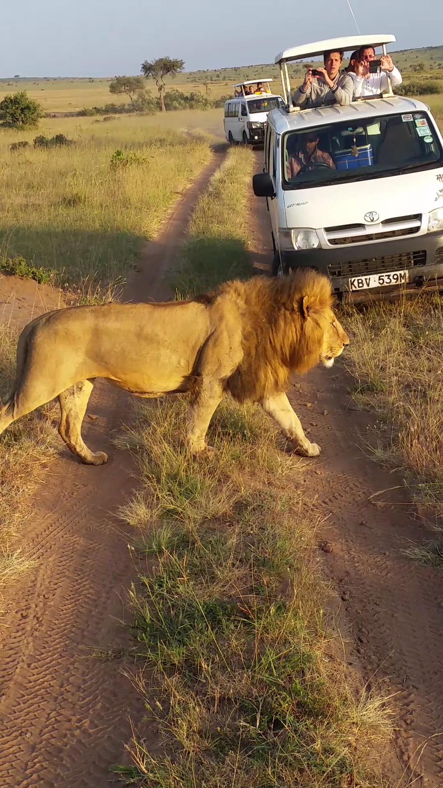

↑
Kenya!
Kenya is the most powerful economy of East Africa and is also a middle income country with a fast growing middle class, however, it is still a developing country, and so certain aspects of the country's society and infrastructure may come as a shock to some visitors from developed countries who are unfamiliar with the quality of life experienced by many Kenyans. Socio - economic inequalities are also observable, with many middle to upper class Kenyans living moderately affluent lifestyles while many other lower income Kenyans live in squalor
Although made up of many diverse ethnic groups and tribes, Kenyans have strong sense of national pride which may be due in part to unity in the struggle for Uhuru (Kiswahili: "freedom") – independence from British colonial rule, achieved in 1963. Most Kenyans seem optimistic about the country's future. Kenyans understandably pursue the business opportunities offered by tourism with a zeal that may be off putting to some visitors, but are usually open, talkative and friendly once business matters have been settled.
Although foreign visitors are now a common sight in many parts of the country, there still exist vast areas off the beaten track where a white or yellow face will attract cries of "Mzungu! Mzungu!" (Kiswahili: "white person") from local children. Visitors to these areas should think especially carefully about the long term effects of their visit on the local community, and should for example avoid giving out sweets or money without restraint – playing with children, or talking to and helping villagers will yield far better results than merely giving out handouts.
